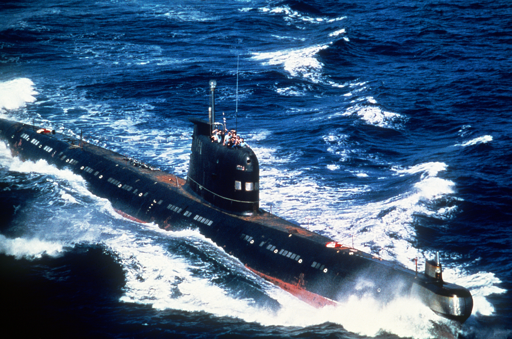

Service History
- Entry into service :
The first Foxtrot-class submarine, INS Kalvari (S23), was commissioned in December 1967. Over time, eight Foxtrot-class submarines joined the Indian Navy between 1967 and 1974.
- Retirement :
The Foxtrot-class submarines were gradually retired from active service, with the last, INS Vagli, being decommissioned on December 9, 2010.
Technical Specifications
- Displacement : 1,950 tons (surface) and 2,475 tons (submerged).
- Dimensions : Length: 91.3 meters; Beam: 7.5 meters.
- Propulsion : Diesel-electric propulsion with three diesel engines and electric motors, allowing for both surfaced and submerged operations.
- Speed :
- Surface Speed: 16 knots (30 km/h)
- Submerged Speed: 15 knots (28 km/h)
- Armament :
- Torpedoes: Equipped with six 533mm torpedo tubes capable of firing both anti-ship and anti-submarine torpedoes.
- Mine-laying Capabilities: Could carry up to 24 mines, enhancing versatility in underwater combat.
- Depth Capability :
Could dive up to 300 meters.
- Range :
- Surfaced: 20,000 nautical miles (at 8 knots)
- Submerged: Limited to around 400 miles at 2 knots when using battery power.
- Crew : Approximately 75 personnel, including officers and enlisted sailors.
Historical Significance
The Foxtrot-class submarines were India’s first submarines and the beginning of its underwater fleet. Their acquisition established India as a regional naval power capable of offensive and defensive underwater
operations. These submarines played a key role in establishing operational doctrines and laid the groundwork for India’s indigenization of submarine technology. The Kalvari-class (Scorpène) submarines of today trace their
heritage to the pioneering days of the Foxtrot-class.
Notable Missions
- 1971 Indo-Pakistani War: Foxtrot-class submarines, such as INS Karanj and INS Kalvari, were deployed to create a naval blockade and prevent the Pakistani Navy from advancing. They served as deterrents and helped ensure India's naval dominance in the region.
- Cold War Era Patrols: Throughout the Cold War, these submarines conducted several patrol missions in the Indian Ocean, maintaining vigilance and contributing to India’s maritime security strategy.
- Training and Development: As India’s first submarines, the Foxtrots were used extensively for training new submarine crews and officers, establishing India’s submarine command and training protocols.
- Exercising Diplomacy: The submarines were showcased in various international exercises and visits, symbolizing India's growing maritime strength and strategic partnerships.